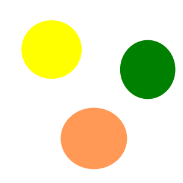
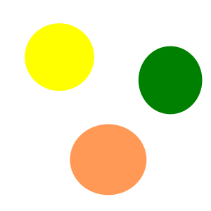
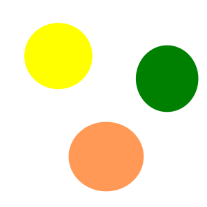

Imágenes en HTML
Acuario de Tela: un lugar para disfrutar en familia las bellezas de la fauna marítima de las costas hondureñas



 Acuario de Tela: un lugar para disfrutar en familia las
bellezas de la fauna marítima de las costas hondureñas

Acuario de Tela: un lugar para disfrutar en familia las
bellezas de la fauna marítima de las costas hondureñas
